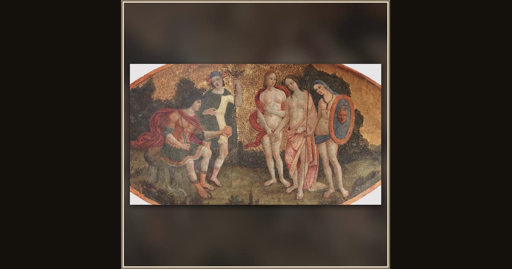

Judgment of Paris
Pinturicchio · ca. 1509 · met
Paris sits before three goddesses in this fresco; Aristotle names him as Alexander and says the goddesses chose him (1.6.25) Explore its place in Aristotle's Rhetoric, Book I, section 101.

Pinturicchio · ca. 1509 · met
Paris sits before three goddesses in this fresco; Aristotle names him as Alexander and says the goddesses chose him (1.6.25) Explore its place in Aristotle's Rhetoric, Book I, section 101.